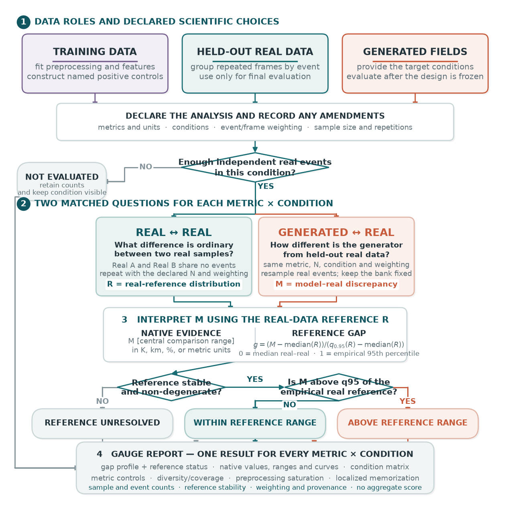
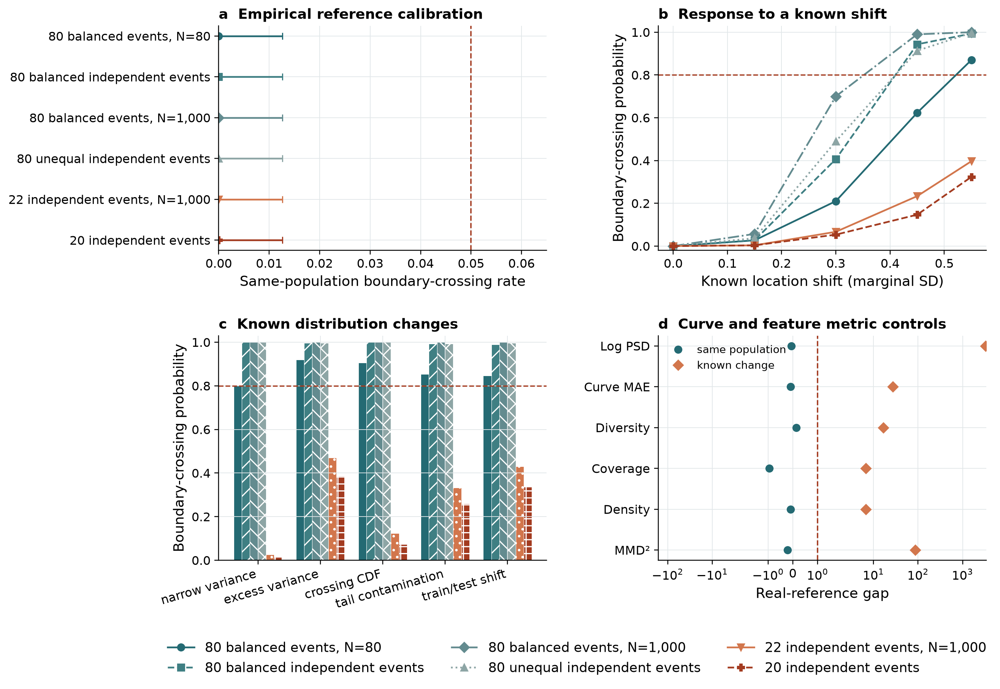
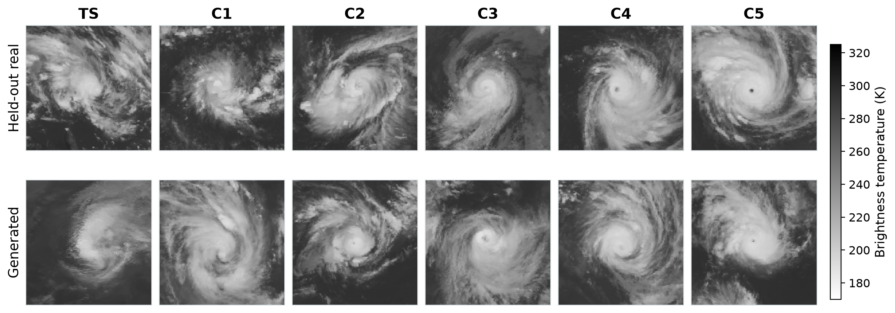
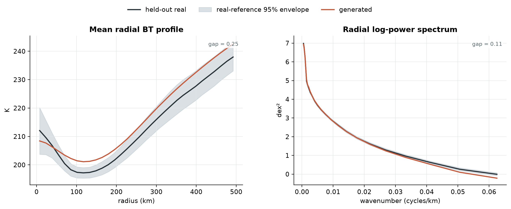

This is the interpretation-first GAUGE output intended for a paper results section. The complete machine report, class matrix, numerical tables, and diagnostic drill-downs remain available underneath it.

From declared data and dependence blocks to registered evidence, real-reference calibration, and an interpretation-first paper bundle.

Same-population crossings, known perturbation response, unequal events, reference stability, and explicit resolution loss in C5-like thin strata.

Typical held-out and generated fields selected by a deterministic seven-functional rule rather than visual preference.
All six native intensity classes and training-only positive controls on one scale; no pooled tail can hide C5.
Block-balanced Category 5 empirical distributions for every scalar physical functional; interpret with its thin-stratum uncertainty.

Category 5 radial-profile and power-spectrum drill-downs; coordinate-wise curve shading is distinguished from the scalar curve discrepancy.
Frozen configuration hash: c8daf1bdd2c79cf2.